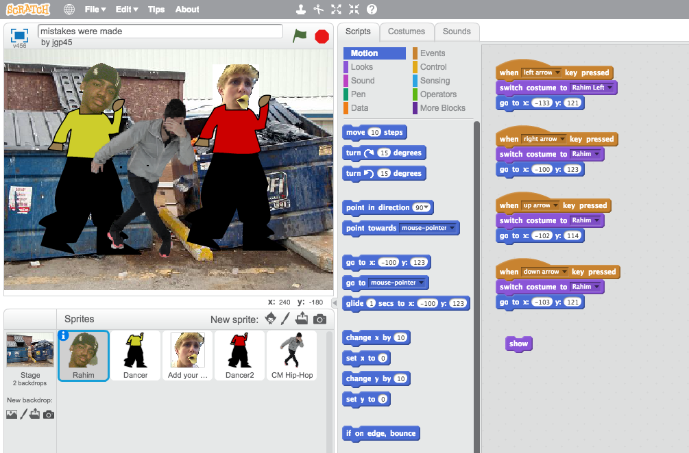
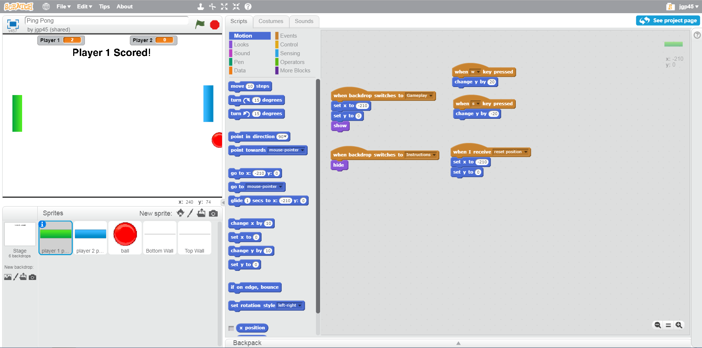

This is my Portfolio Page!
This is where I'll be adding projects which I have completed over the course of the year.


This is a remix of the Scratch starter project, "Remix this Dance." It differs from the original in the sense that it has new sprites, music, and features added to it, all inspired by the one and only Jake Paul.
This is a project that I created with my partner, Jonathan Lin. We made a two-player game heavily inspired by the original game Pong, where the goal is to move your paddle and reflect the ball past your opponent in order to score points. First to 7 points wins!